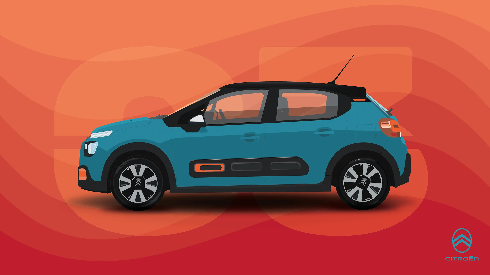
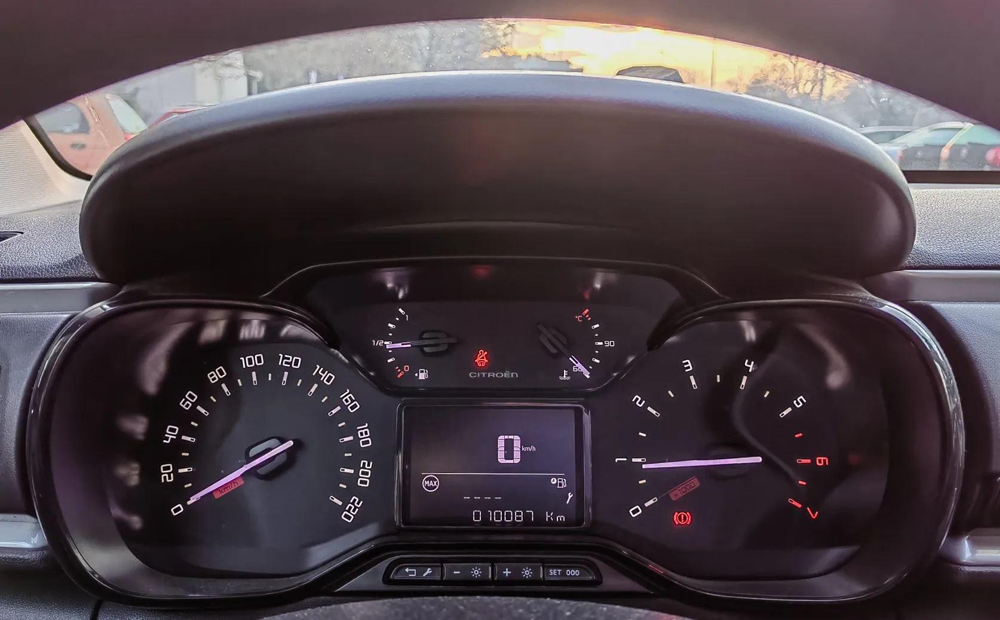
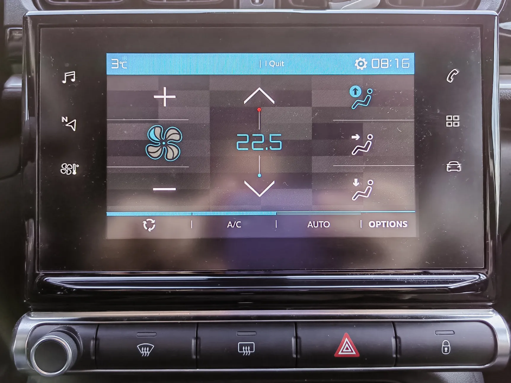
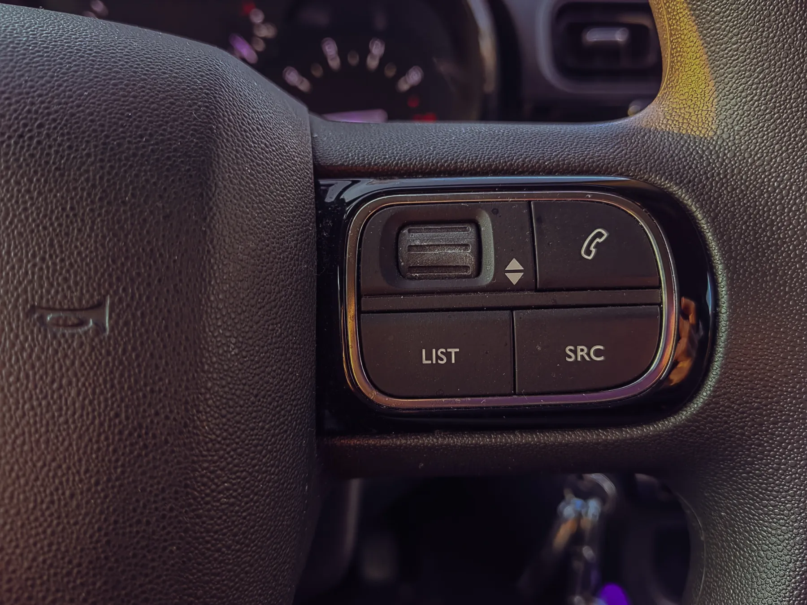
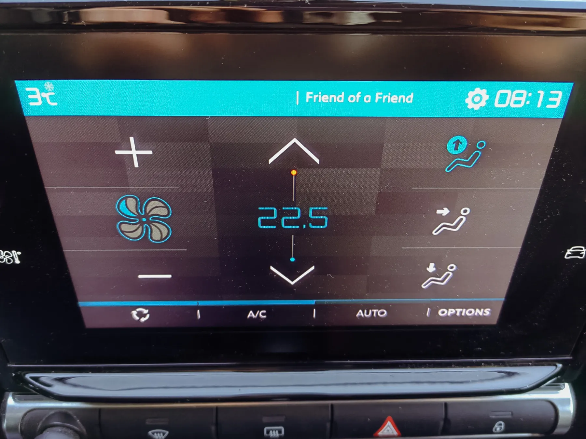

The 2021 Citroën C3 HMI operates on a philosophy of digital centralization, moving away from the distributed physical controls of previous generations. The system utilizes a 7-inch capacitive touchscreen as the primary nucleus for vehicle management. Including the AC, audio, and vehicle safety settings, this central hub consolidates essential functions into a unified software interface. By removing traditional rotary dials and buttons, Citroën aimed to create a visually clean, minimalist cabin that reduces aesthetic clutter and aligns with a modern, tech-forward brand identity.
Complementing the digital hub is a driver-focused hybrid instrument cluster. It retains large, high-contrast analogue dials for engine speed and vehicle velocity to ensure immediate glanceability. Positioned between these dials is a smaller digital display that handles dynamic data, such as fuel consumption and traffic sign alerts.
While the steering wheel features tactile rollers and buttons to provide a secondary layer of control, the overall architecture prioritizes the touchscreen for the vast majority of cabin interactions. This creates an interface that is sleek and modern in appearance, though it requires the driver to navigate nested digital menus for tasks that were historically handled by physical, tactile affordances.

In the context of automotive HMI and industrial design, digital centralization refers to the consolidation of multiple, disparate physical controls and information displays into a single, unified digital interface, typically a central touchscreen. This shift moves the vehicle’s operation from a distributed physical architecture to a hierarchical software architecture, where these functions are nested within a digital operating system.
Nevertheless, this approach has resulted in a variety of UX bottlenecks and pain points. For example, according to interaction cost theory, centralization often increases the interaction cost. Interaction cost is defined as the sum of physical and mental efforts required to reach a goal. By nesting functions, the time-on-task increases compared to distributed physical controls (Nielsen, 1993). Furthermore, Wickens' multiple resource theory is often used to critique digital centralization. It suggests that humans process information better when it is distributed across different modalities (for example, tactile for AC, visual for speed). Centralizing everything into the visual modality can lead to information overload (Wickens, 2008).
The Swedish car magazine Vi Bilägare (2020) specifically identifies this "centralized digital-only" approach as a primary pain point for driver safety and task efficiency. In addition, in their recent safety briefings, Euro NCAP (2024) defines the over-reliance on centralized touchscreens as a "distraction risk," leading to their 2026 mandate for the re-introduction of physical buttons for critical functions.
This is a brief heuristic analysis of the 2021 Citroën C3 HMI based on Jakob Nielsen's 10 Usability Heuristics for User Interface Design (Nielsen, 1993). The analysis focuses on key areas where the system excels or falls short in terms of usability and user experience.
The C3 interior adheres strictly to the Aesthetic and Minimalist Design heuristic. By removing physical switchgear, Citroën achieved a "clean" cockpit that reduces visual noise (Stellantis, 2021). However, this creates a conflict with the Visibility of System Status. In a driving context, "status" includes immediate feedback from environmental controls. Because the AC settings are nested within the digital layer, the system fails to provide a persistent, "at-a-glance" confirmation of the cabin state unless the specific menu is active. This lack of a dedicated status indicator for secondary tasks forces the driver to divert visual attention from the primary driving task to the central hub.

A critical failure in this model is the departure from Natural Mapping. In the "real world" of automotive operation, rotary dials provide a physical metaphor for "more" or "less" that can be operated via muscle memory. The 2021 C3 replaces these with digital sliders. Vi Bilägare (2020) highlights that touch-based buttons lack the tactile notches of physical gear, forcing users to rely entirely on the visual modality that resembles lift buttons, rather than AC controls. This, in effect, breaks the expected mental model of vehicle operation where high-frequency tasks should be reachable without visual confirmation.

The system offers some flexibility through the inclusion of steering wheel hotkeys and rollers, which allow for "blind" control of audio and basic trip data. The dial and buttons on the left are used to control parameters on the dashboard, while the ones on the right for the music player and phone functionality of the screen. However, it could be argued that the Efficiency of Use for expert users is hampered by the "modal" nature of the screen. An expert driver is not able to multitask, they cannot adjust the fan speed while monitoring a complex navigation junction. This task interference is a significant heuristic violation in an environment where safety is essential. The system forces a serial interaction model (one task at a time) in a high-stakes environment that often requires parallel processing, for instance, driving and adjusting comfort at the same time.
The hardware platform in the mid-tier C3 is prone to input latency. In effect, the screen transitions just feel laggy and choppy very often. According to Nielsen (1993), system response times exceeding 0.1 seconds break the feeling of instantaneous communication. When the screen lags, it violates the Error Prevention heuristic. Users often assume a touch was not registered and they tap again. This could lead to a double-click error that navigates them deeper into an unwanted menu. Without a physical "Home" button or a consistent "Emergency Exit" (Heuristic #3: User Control and Freedom), recovering from these accidental navigations while driving becomes a high-stress operation.

The color-coding of the HVAC icons on the 2021 C3 touchscreen presents a significant violation of the Consistency and Standards heuristic, as it subverts the common mental models established in automotive and consumer electronic interfaces. In the C3, the choice to use white to signify Off and blue to signify On for the air vents in the vehicle creates a semiotic conflict. On the other hand, the On/Off state on the buttons in bottom secession is signified by blue and desaturated blue. A driver looking to turn on or off a specific vent may perceive the blue icon as an off state since it is a darker shade. This chromatic ambiguity increases cognitive processing time, as the driver cannot rely on universal color associations to confirm the system's status at a glance.
The 2021 Citroën C3 HMI represents a pivotal moment in automotive design where visual brand identity was prioritized over functional ergonomics. While the interface succeeds in creating a sleek, "iPad-like" cabin atmosphere (Auto&Design, 2016), it fundamentally fails the core UX requirement of the automotive context: minimizing "eyes-off-road" time.
The transition from tactile, distributed controls to a centralized, hierarchical software architecture increases the interaction cost for essential tasks. By violating basic heuristics—specifically Natural Mapping and Visibility of System Status—the system forces drivers to rely on visual confirmation for tasks that should be intuitive and muscle-memory-driven. Ultimately, the C3’s HMI serves as a case study in how "minimalist" modernism can inadvertently sacrifice user safety and efficiency for the sake of a clean aesthetic.